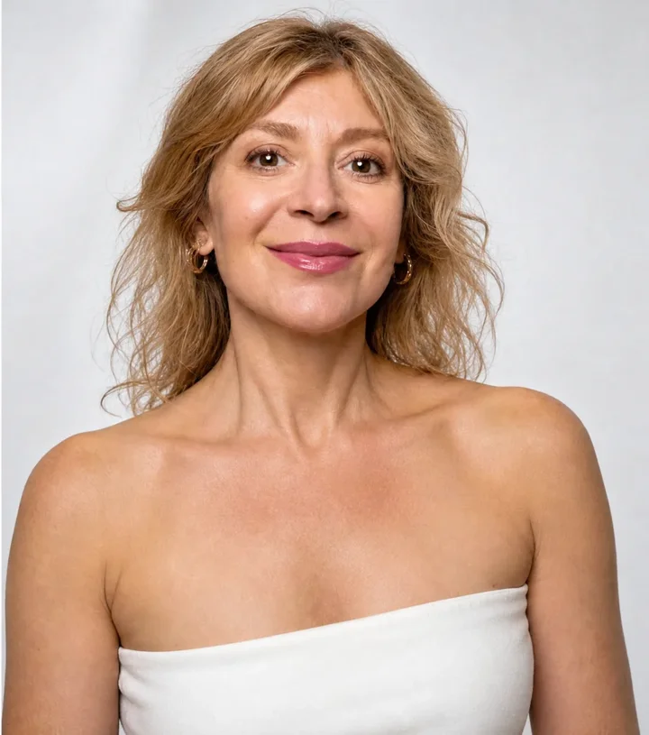

Лимфодренажная гимнастика на каждый день
8 минут стоя, от шеи до стоп — чтобы отёки уходили с лица надолго, а не на один день.
Как и обещала в видео, дарю вам гимнастику, по которой занимаются мои ученицы в клубе.
В клубе она называется «Суставная гимнастика». Мы мягко разминаем суставы, а рядом с ними находятся лимфоузлы. Поэтому она снимает отёки и с тела, и с лица.
Куда прислать подарок? 👇🏻
💬 Откроется чат — нажмите «Старт» (во ВКонтакте — «Начать»), и я сразу пришлю вам гимнастику.
Что делаем за 8 минут
- Шея и плечи — снимаем зажатость, которая тянет низ лица вниз
- Кисти, локти и плечевые суставы
- Таз и тазобедренные суставы — держимся за спинку стула
- Колени, голеностопы и стопы: перекаты, ходьба на носках и на пятках
- В конце — лёгкое встряхивание всем телом, сколько получится. От него уходят отёки рук, и вены становятся менее заметны
Гимнастика останется у вас в чате
Делать её нужно каждый день, поэтому я присылаю её в Телеграм или ВКонтакте. Утром открыли чат, включили — искать ссылку не придётся.
А через день пришлю вам ещё одну тренировку из клуба — «Упругая шея»: на второй подбородок, тяжи и дряблую шею.

Я Татьяна Дембовская, мне 57, тренер по естественному омоложению. В моём Закрытом клубе занимается больше 300 женщин со всего мира.
Заберите гимнастику 👇🏻
💬 Откроется чат — нажмите «Старт» (во ВКонтакте — «Начать»), и я сразу пришлю вам гимнастику.